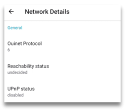

Чому варто стати мостом Сено?
Однорангова мережа будується з кожного підключеного до неї вузла (так, це стосується і вас!). Чим більше вузлів, тим сильнішою та універсальнішою стає мережа.
Якщо ви використовуєте браузер Ceno в країні, де не застосовується цензура в Інтернеті (або вона не така сувора, як в інших країнах), розгляньте можливість допомогти іншим користувачам Ceno, ставши проміжним вузлом. Ви почнете маршрутизувати трафік між клієнтами, які проживають у країнах з суворою цензурою, та інжекторами Ceno.
Ви не зможете бачити їхній трафік (він надсилатиметься через зашифрований тунель), а також жодна частина цього трафіку не залишатиметься на вашому пристрої.
Примітка: Конфігурація, описана в цьому розділі, також може допомогти вашому пристрою ефективно поширювати контент іншим користувачам у розподіленому кеші, тому, будь ласка, розгляньте можливість її застосування, якщо ви використовуєте Ceno в країні, де діє цензура (але майте на увазі ризики поширення такого контенту іншим користувачам)
Як стати мостом Сено?
Як зазначено в цьому розділі, додаток Ceno надає деякі функції, які дозволяють вам легко стати мостом Ceno, якщо це дозволяє конфігурація вашої мережі.
Якщо ви перевірили свою досяжність та статус UPnP, і вони виглядають так

Вам потрібно буде налаштувати маршрутизатор, або ввімкнувши UPnP, або налаштувавши переадресацію портів. У наступних розділах ми опишемо кроки, які необхідно виконати.
Увімкнення UPnP на маршрутизаторі Wi-Fi
UPnP — це найпростіший спосіб зробити ваш браузер Ceno (або комп’ютерний клієнт) доступним для мережі Ceno.
Примітка. Увімкнення UPnP на маршрутизаторі Wi-Fi може наражати пристрої у вашій мережі на зовнішні перешкоди. Будь ласка, усвідомте ризики, а також розгляньте можливість використання альтернативних методів, як описано нижче.
Перше, що вам потрібно зробити, це увійти в веб-інтерфейс вашого маршрутизатора. Щоб дізнатися, як це зробити, зверніться до посібника користувача маршрутизатора, в якому вказано, який логін і пароль потрібно використовувати для входу.
Після цього кроки, які потрібно виконати, схожі, але можуть відрізнятися для всіх моделей маршрутизаторів.
Ось гарна стаття з покроковими інструкціями щодо ввімкнення UPnP на різних маршрутизаторах.
Будь ласка, знайдіть інструкції для вашого типу маршрутизатора та виконайте необхідні кроки.
Однак, якщо хочете, можете налаштувати переадресацію портів замість UPnP.
Використання переадресація портів як альтернативи UPnP
Перший крок такий самий, як і раніше: увійдіть у веб-інтерфейс маршрутизатора.
Потім, будь ласка, знайдіть опцію переадресація портів.
Щоб побачити, на яку IP-адресу потрібно переадресовувати з’єднання та відповідний порт, відкрийте сторінку Налаштування Ceno та знайдіть розділ Локальні кінцеві точки UDP.

Переадресація портів має бути для протоколу UDP (не TCP).
Ceno вибирає випадковий порт при першому запуску і зберігає його для наступних запусків, але локальна мережева IP-адреса вашого пристрою може час від часу змінюватися. Тому вам слід періодично перевіряти сторінку Налаштування Ceno, щоб переконатися, що ваш пристрій доступний для мережі Ceno.
Ваш пристрій доступний, якщо його
Статус досяжності – ймовірно досяжний або досяжний
Статус UPnP: увімкнено
Технічне зауваження: Або ж ви можете переконатися, що маршрутизатор завжди призначає вашому пристрою однакову IP-адресу (наприклад, через статичну оренду DHCP для MAC-адреси пристрою)
Якщо у вас є комп’ютер із хорошим підключенням, який залишається ввімкненим більшу частину часу, і ви хочете налаштувати його як міст Ceno, будь ласка, продовжуйте читати.
Запуск моста на компʼютері
Якщо ваш комп'ютер підтримує контейнери Docker, ви можете запустити на ньому
попередньо налаштований клієнт Ceno, який буде виконувати функцію моста. Якщо
Docker ще не встановлено, дотримуйтесь інструкцій, щоб встановити Docker Engine
на вашій платформі. Для похідних Debian, таких як Ubuntu або Linux Mint, просто
запустіть: sudo apt install docker.io
Щоб розпакувати контейнер клієнта Ceno, достатньо виконати наступну команду в терміналі (вона виглядає лячно, але Ви можете просто скопіювати та вставити її в командний рядок):
sudo docker run --name ceno-client \
-dv Ceno:/var/opt/ouinet --network host \
--restart unless-stopped equalitie/Ceno-client
Якщо операційна система Вашого компʼютера не GNU/Linux, команда повинна бути трохи іншою:
sudo docker run --name ceno-client \
-dv ceno:/var/opt/ouinet \
-p 127.0.0.1:8077-8078:8077-8078 -p 28729:28729/udp \
--restart unless-stopped equalitie/ceno-client
Команда запустить контейнер з назвою ceno-client, який працюватиме під час кожного завантаження, якщо ви явно не накажете йому зупинитися.
Будь ласка, перегляньте документацію клієнта Ceno Docker для отримання додаткової інформації про те, як маніпулювати контейнером.